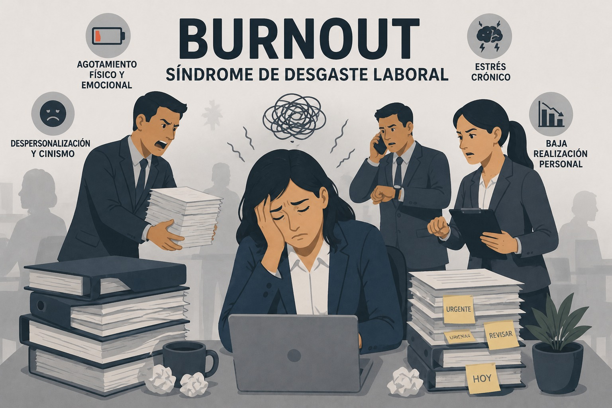

Riesgo psicosocial
Burnout o síndrome de desgaste laboral
Cronificación del estrés laboral que se expresa en agotamiento físico, mental y emocional, pérdida de interés y deterioro del desempeño.

Definición
El síndrome de burnout o “síndrome del trabajador quemado” hace referencia a la cronificación del estrés laboral. Se manifiesta como un estado de agotamiento físico y mental que se prolonga en el tiempo y altera la personalidad y la autoestima del trabajador. Es un proceso en el que progresivamente se pierde el interés por las tareas y se desarrolla una reacción psicológica negativa hacia la ocupación laboral (Quirón Prevención, 2018).
El término fue expuesto por Herbert Freudenberger en 1974, a partir del análisis del agotamiento en colaboradores de atención al usuario en las empresas de la época.
El burnout o síndrome del desgaste laboral también se define como una fatiga emocional originada principalmente por la sobrecarga de trabajo, que puede desencadenar problemas físicos, mentales y emocionales (Seguros SURA Colombia, 2021).
Características
- El estado de agotamiento mental y físico que produce el burnout ha sido clasificado por la Organización Mundial de la Salud (OMS) como un fenómeno ocupacional consecuencia del estrés laboral crónico (Martins, 2026).
- Agotamiento extremo: Estado que impacta severamente tanto la salud física como la mental del trabajador (Martins, 2026).
- Fatiga crónica: Genera un cansancio persistente y de larga duración que no se alivia fácilmente (Martins, 2026).
- Ausentismo laboral: Incapacidad del trabajador para asistir a su puesto de trabajo (Martins, 2026).
- Prevalencia en sectores de servicios: Rasgo común en profesionales que brindan atención directa a otras personas, como el personal sanitario o de centros de llamadas (call centers) (Martins, 2026).
Del Estrés al Burnout
| Criterio | Estrés laboral | Burnout |
|---|---|---|
| Definición | Reacción física y emocional perjudicial que surge cuando las exigencias del trabajo superan las capacidades, recursos o necesidades del empleado. | Resultado de un estrés laboral crónico que aparece cuando fallan las estrategias de afrontamiento que el individuo suele utilizar. |
| Naturaleza | Reacción puntual o continua ante un desajuste entre demanda y capacidad. | Proceso crónico y progresivo, consecuencia del estrés laboral sostenido en el tiempo. |
| Dimensiones / componentes | No se describe en términos de dimensiones específicas. |
|
| Fuente / cita | Cárdenas Marín & Ruiz (2020) | Cárdenas Marín & Ruiz (2020), con base en Uribe Prado (2015) |
Causas
El síndrome suele aparecer cuando se combinan diversos factores estresantes en el entorno de trabajo, tales como: cargas de trabajo muy elevadas y jornadas prolongadas, niveles altos de estrés y la realización de múltiples tareas de forma inmediata, además de malas relaciones tanto con jefes como con compañeros de equipo (SURA, 2021).
Entre las principales causas también se encuentran:
- Falta de control: no poder opinar en las decisiones relacionadas con el trabajo, como el horario, las tareas o la carga laboral, puede ocasionar agotamiento laboral. No contar con los recursos necesarios para trabajar también contribuye.
- Falta de claridad sobre lo que se espera: si no se tiene certeza sobre lo que el jefe o la organización esperan, es poco probable sentir que se está haciendo un buen trabajo.
- Conflictos con otras personas: presencia de relaciones laborales tensas, intimidación o conflictos con compañeros o superiores que aumentan el estrés laboral.
- Demasiado o muy poco para hacer: el trabajo puede resultar excesivamente demandante o, por el contrario, aburrido, lo que genera desgaste al requerir esfuerzo constante de concentración.
- Falta de apoyo: sensación de soledad en el entorno laboral y en la vida personal que incrementa el nivel de estrés.
- Problemas con el equilibrio entre la vida y el trabajo: cuando el trabajo consume demasiado tiempo y energía, se reduce el espacio para la vida personal, lo que puede derivar en agotamiento laboral (Mayo Clinic, 2025).
Consecuencias
Impacto en la salud física y mental
- Deterioro de la salud física: Puede provocar fatiga crónica, problemas en el sistema inmunológico, dolores de cabeza frecuentes, tensión muscular (especialmente en cuello y espalda) y cambios en el apetito o peso corporal.
- Trastornos psicológicos: Puede desencadenar ansiedad y depresión; el trabajador suele experimentar vacío interior, desesperanza y pérdida de autoestima.
- Colapso total: En la fase más grave, el síndrome puede conducir a un colapso físico y emocional que requiere intervención profesional.
Consecuencias en el desempeño laboral (Martins, 2026)
- Absentismo y abandono: En etapas avanzadas, el trabajador suele ausentarse de forma prolongada o buscar un cambio radical en su situación laboral para intentar recuperarse.
- Baja productividad: Se registra una reducción notable en el rendimiento y en la calidad de las tareas realizadas.
- Aumento de errores: Debido a la dificultad para concentrarse, los trabajadores afectados tienden a cometer más errores.
- Desvinculación: El trabajador pierde el compromiso con la organización y adopta una perspectiva de que "nada de lo que hace importa".
Impacto en el clima y comportamiento
- Deterioro de las relaciones: Fomenta un ambiente laboral tenso y genera conflictos frecuentes con compañeros o supervisores. El trabajador suele actuar con cinismo, frialdad e irritabilidad.
- Aislamiento social: Existe una tendencia marcada a alejarse de los demás dentro del entorno de trabajo.
- Conductas de riesgo: Puede incrementarse el consumo excesivo de cafeína o alcohol como un intento fallido de gestionar el agotamiento y el estrés.
- Pérdida de habilidades cognitivas: Se ve afectada la capacidad de tomar decisiones, la creatividad y la facultad para resolver problemas.
Componentes y etapas
El entorno laboral y los factores psicosociales
| La salud y el rendimiento del trabajador dependen de la interacción entre dos grandes bloques: | |
|---|---|
| Factores organizacionales | Factores personales |
|
|
|
💡 La manera en que un empleado percibe su ambiente es crucial, ya que esto determina sus actitudes y expectativas dentro de la organización. |
|
12 etapas progresivas
El proceso de "quemarse" no es repentino, sino que atraviesa una progresión de etapas (Cárdenas y Ruiz, 2020):
Motivación sin límites: El trabajador desborda energía, se aplica al 100% y tiene una gran ambición por dar el ejemplo y ser valorado.
Excesivas exigencias: En busca de la perfección, la persona se obliga a ir más allá de sus límites, haciendo horas extras y sin lograr desconectarse del trabajo.
No consideración de necesidades personales: Se sacrifica el ocio y el tiempo libre. El trabajador duerme menos, come más rápido y deja de "escuchar" a su propio cuerpo.
La huida: Se multiplican los momentos de malestar, estrés o pánico, pero la persona no identifica el origen. Ante los conflictos, elige evitar la situación.
Redefinición de los valores: El trabajo se vuelve la única prioridad absoluta, relegando a la familia y amigos a un segundo plano, lo que provoca aislamiento.
Negación de los problemas: Aparece la impaciencia, la intolerancia y, en ocasiones, la agresividad. Se culpa a la sobrecarga de trabajo o a la incompetencia de los colegas por los problemas existentes.
Repliegue en uno mismo: Las interacciones sociales se reducen al mínimo necesario. El mundo exterior resulta agotador y puede aparecer el consumo excesivo de tabaco o alcohol para aliviar el estrés.
Cambios manifiestos de comportamiento: El cansancio y la soledad son evidentes para el entorno cercano, aunque el trabajador suele ser el único que no nota su cambio de actitud.
Despersonalización: La persona siente que ya no tiene nada bueno que ofrecer y pierde la confianza en sus capacidades. La vida se convierte en una sucesión de actos mecánicos sin emoción.
Vacío interior: Se experimenta una sensación de hueco interno que se intenta llenar desesperadamente mediante excesos (alcohol, drogas, comida, etc.).
Depresión: Aparece un estado de agotamiento total, desesperación y apatía profunda. El futuro se percibe como algo inconcebible.
Burnout (Colapso): Se toca fondo. Tanto el cuerpo como la mente están al borde del colapso total y pueden aparecer pensamientos suicidas.
Instrumento de evaluación
El Maslach Burnout Inventory (MBI), es un cuestionario de 22 ítems diseñado para medir la frecuencia e intensidad del síndrome. Este test evalúa el cansancio emocional, la despersonalización y la realización personal; puntuaciones altas en las dos primeras y bajas en la tercera confirman la presencia de burnout.
Mecanismos de prevención organizacional
Prevención y autocuidado
Gestión emocional y cognitiva
- Gestión emocional: identificar y regular emociones, transformando pensamientos negativos en interpretaciones más funcionales.
- Auto-organización: establecer prioridades, planificar objetivos y gestionar el tiempo de manera eficiente.
Prevención primaria
- Autoobservación: análisis de rasgos personales como perfeccionismo o autoexigencia y su relación con el entorno laboral.
- Reconocimiento de sesgos cognitivos: como el “sesgo de optimismo” o la percepción del burnout como un “deber de honor”.
Prevención secundaria
- Priorizar tareas: uso de la Matriz de Eisenhower para diferenciar lo urgente de lo importante.
- Manejo del estrés: aplicación de las 4 A del estrés (alterar, alejar, aceptar y adaptarse).
Hábitos de bienestar
- Pausas breves durante la jornada laboral.
- Alimentación equilibrada para evitar el uso de “alimentos reconfortantes”.
- Actividad física regular (al menos 150 minutos de ejercicio aeróbico semanal).
- Técnicas de relajación como mindfulness o meditación.
- Apoyo externo: redes familiares y sociales, actividades artísticas y búsqueda de ayuda profesional cuando sea necesario.
Intervenciones y estrategias de afrontamiento
Técnicas de relajación
- Respiración de caja.
- Relajación muscular progresiva.
- Visualización de escenarios tranquilos.
Intervención psicológica
- Terapia Cognitivo-Conductual (CBT): reestructuración de pensamientos negativos.
- Terapia de Aceptación y Compromiso (ACT): enfoque en mindfulness y valores personales.
Intervención psicosocial
- Tutorías basadas en necesidades individuales.
- Grupos Balint como espacios de reflexión y apoyo en entorno confidencial.
- Intervenciones grupales para el autocuidado y el fortalecimiento emocional.
Medidas de prevención organizacional
- Capacitar a los líderes en inteligencia emocional para que puedan identificar señales tempranas de agotamiento y acompañar a los equipos con empatía.
- Promover espacios de escucha y reconocimiento, mediante reuniones periódicas para compartir avances, expresar preocupaciones y fortalecer la cohesión del equipo.
- Evaluar la carga laboral y distribuir tareas de forma equitativa, considerando las capacidades y los ritmos de los trabajadores.
- Implementar programas de bienestar laboral, incluyendo pausas activas, apoyo psicológico, asesorías nutricionales y actividades deportivas.
Material de apoyo
Mirar video en YouTube (tTxxhyrco14) Mirar video en YouTube (95ypZUIQ5Gs) Mirar video en YouTube (nGMA1AmbQr8)Referencias bibliográficas
Canon, C. (2025, 23 de octubre). ¿Qué es el burnout y cómo debe tratarse en las empresas? Politécnico Grancolombiano. https://www.poli.edu.co/blog/poliverso/que-es-el-burnout-y-como-debe-tratarse-en-las-empresas
Cárdenas Marín, Y., & Ruiz, F. (2020). Guía prevención del burnout [Folleto]. Psírculo Creativo. https://www.sesst.org/wp-content/uploads/2021/07/guia-prevencion-del-burnout-.pdf
Martins, J. (2026, 4 de mayo). Síndrome de burnout: Síntomas, fases y prevención. Asana. https://asana.com/es/resources/what-is-burnout
Mayo Clinic. (2025, 30 de septiembre). Agotamiento laboral: Cómo detectarlo y tomar medidas. https://www.mayoclinic.org/es/healthy-lifestyle/adult-health/in-depth/burnout/art-20046642
Noticias Caracol. (2024, 15 de febrero). Síndrome de burnout: Cómo el trabajo afecta la salud mental y física de los empleados [Video]. YouTube. https://www.youtube.com/watch?v=nGMA1AmbQr8
OpenAI. (2026). Imagen conceptual sobre Burnout o Síndrome de desgaste laboral que ilustra el agotamiento, despersonalización y baja realización personal con carpetas acumuladas [Imagen generada por IA]. ChatGPT. https://chatgpt.com
Popa-Velea, O., Diaconescu, L. V., Mihăilescu, A., Sfetcu, R., Vladescu, C., Galati, G., & Merlo, S. (2021). Manual de burnout: Edición de bolsillo [Manual]. Proyecto Erasmus+. https://www.infocop.es/pdf/Burnout%20Manual.pdf
Quirónprevención. (2018, 24 de julio). Síntomas del síndrome de burnout: ¿cómo identificarlo? https://www.quironprevencion.com/blogs/es/prevenidos/sintomas-sindrome-burnout-identificarlo
Seguros SURA Colombia. (2021, 3 de mayo). ¿Qué es el burnout o síndrome de desgaste laboral? https://segurossura.com/co/blog/saludables/que-es-el-burnout-o-sindrome-de-desgaste-laboral/
Supérate con Psicología. (2021, 15 de marzo). ¿Cómo superar el burnout? [Video]. YouTube. https://www.youtube.com/watch?v=95ypZUIQ5Gs
Umivale Activa. (2022, 17 de noviembre). Síndrome de burnout en el ámbito laboral [Video]. YouTube. https://www.youtube.com/watch?v=tTxxhyrco14